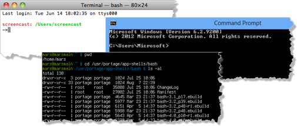

The Shell
Depending on your operating system and C++ development environment used, there are different methods of starting a program. All of these methods ultimately rely on the operating system's facility to load and run a program.
While you can write C++ code which calls these facilities directly, your IDE will normally make use of your operating system's command processor, also known as the shell.

In Windows, the shell is usually the program named cmd.exe, although later versions of Windows come with a more powerful shell program called Powershell.
In Linux and on the Mac, the most popular shell program is bash (the Bourne-again Shell; a typical UNIX pun). That is the one we are using in our workspaces.
 This course content is offered under a
CC
Attribution Non-Commercial license. Content in this course
can be considered under this license unless otherwise noted.
This course content is offered under a
CC
Attribution Non-Commercial license. Content in this course
can be considered under this license unless otherwise noted.